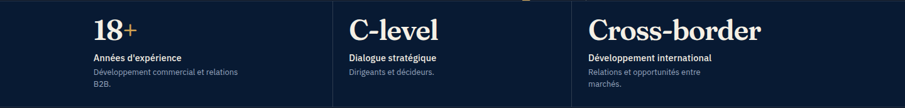
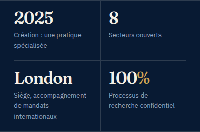
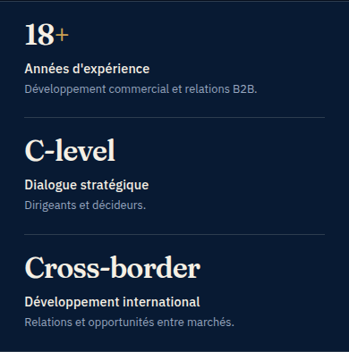
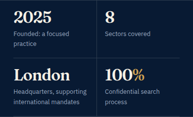
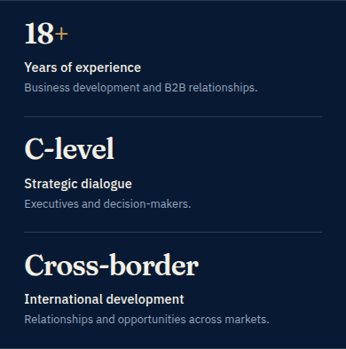

Bandeau de la homepage, avant / après
FR · ordinateur
Avant (en ligne)Après (à publier)
FR · mobile
Avant (en ligne)
Après (à publier)
EN · ordinateur
Avant (en ligne)Après (à publier)
EN · mobile
Avant (en ligne)
Après (à publier)